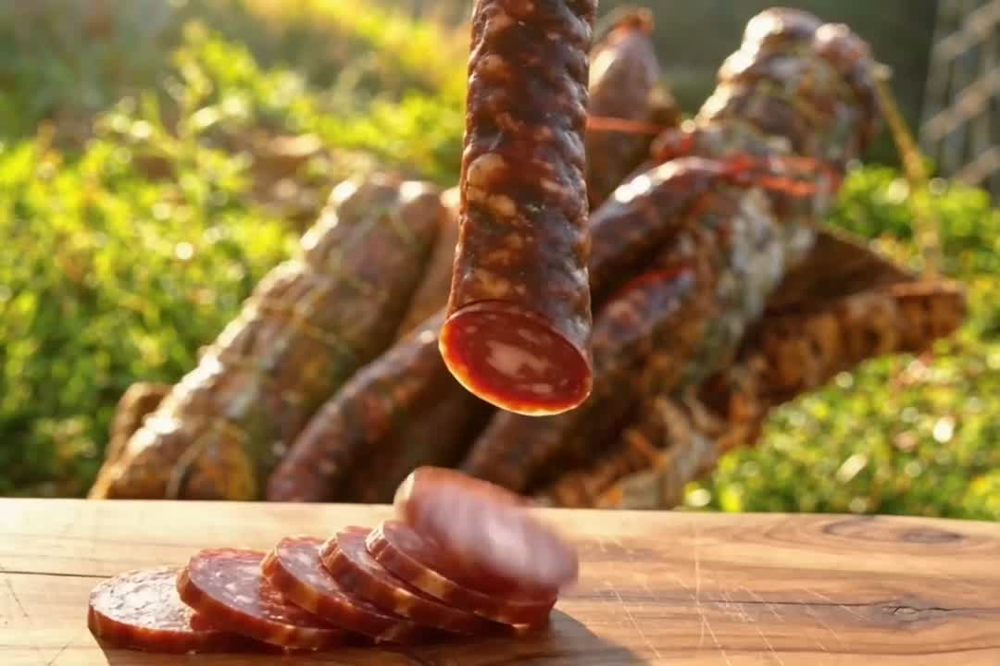
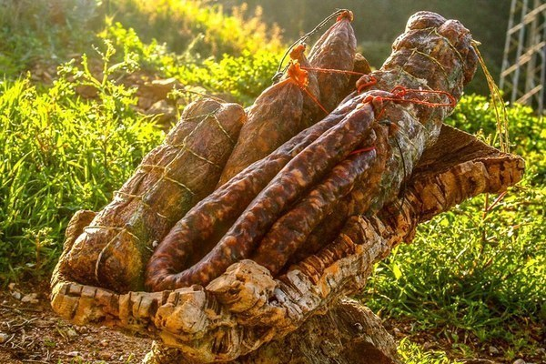
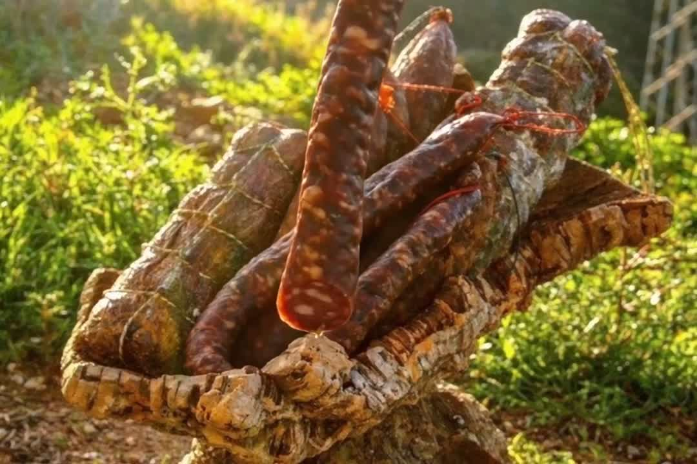

Saucisson de sanglier
Maigre de sanglier et gras noble, séché douze mois. Le goût profond du maquis.
Pièce ± 400 gSanglier du maquis. Chassé, préparé et séché par une seule paire de mains.
Nos pièces sèchent lentement, au rythme du maquis. Pas de chambre froide, pas de raccourci — le temps fait son œuvre.
Nos sangliers vivent libres dans la montagne corse. Chaque pièce est chassée, préparée et affinée par nos soins.
Un couteau, une planche, des amis. La charcuterie corse ne demande rien de plus.
Chaque pièce est unique — découvrez ce qui sort du séchoir.
Voir les produitsProduits d'exemple — la liste réelle, les poids et les prix seront ceux du producteur.

Maigre de sanglier et gras noble, séché douze mois. Le goût profond du maquis.
Pièce ± 400 g
Échine affinée et poivrée, fondante à la découpe. L'incontournable des planches.
Pièce ± 800 g
Le fier emblème corse, au foie et à la viande de sanglier. À griller ou tel quel.
Saison — hiver
Filet maigre, sel, poivre et patience. Tranche fine, goût délicat.
Pièce ± 600 gBoutique vitrine — commandes et renseignements en direct. Réponse rapide, envoi soigné depuis la Corse.
Nous contacter